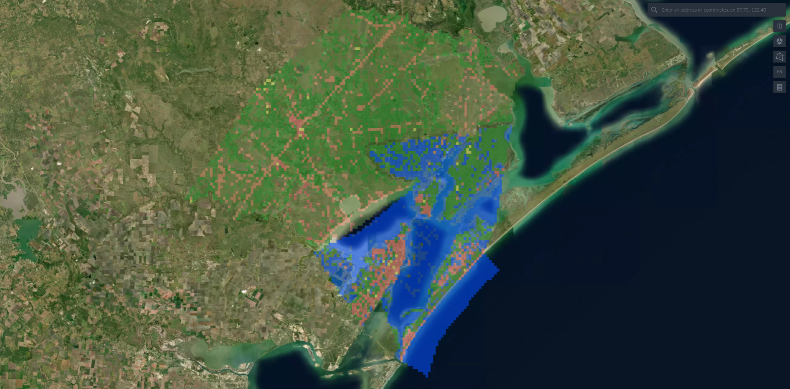
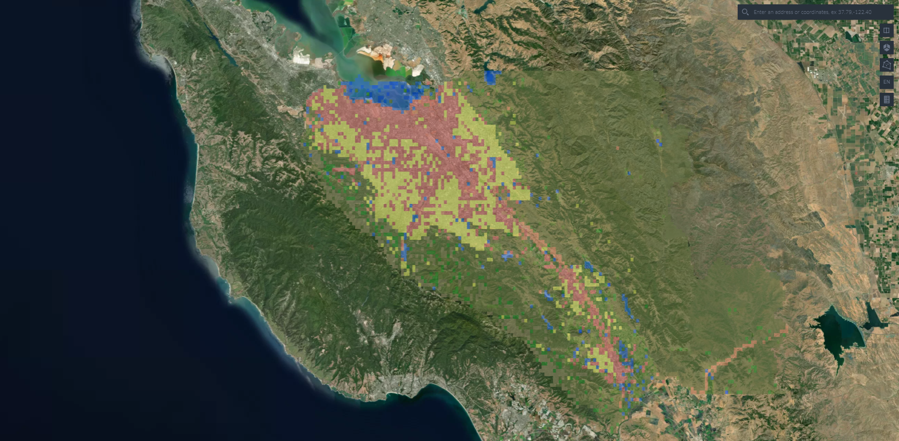

Land Use and Cover Map Generation
Process
- The LULC identification model was trained on satellite imagery sourced from EuroSAT and Google Earth Engine, using RGB image classification. The result was a model which allows the user to request satellite images from certain regions, segment the image into 64x64 chunks, and use the LULC model to accurately label them.
- A GeoJSON file is returned with the predicted labels, which is then visualized using kepler.gl.
Impact
- In combination with the LULC maps, the two models allow for a user-friendly view of land usage in order to assess risk and potential improvements for future urban development.

Aransas and Refugio County -- The Two Counties Most Affected by Hurricane Harvey

Santa Clara - Where We Are!